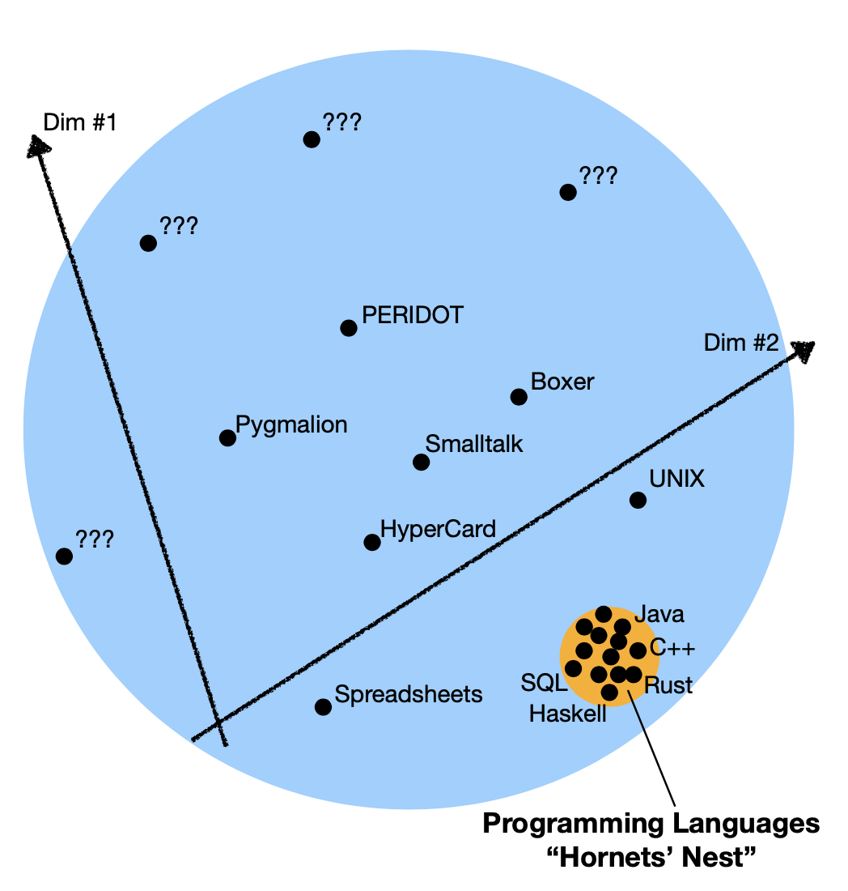
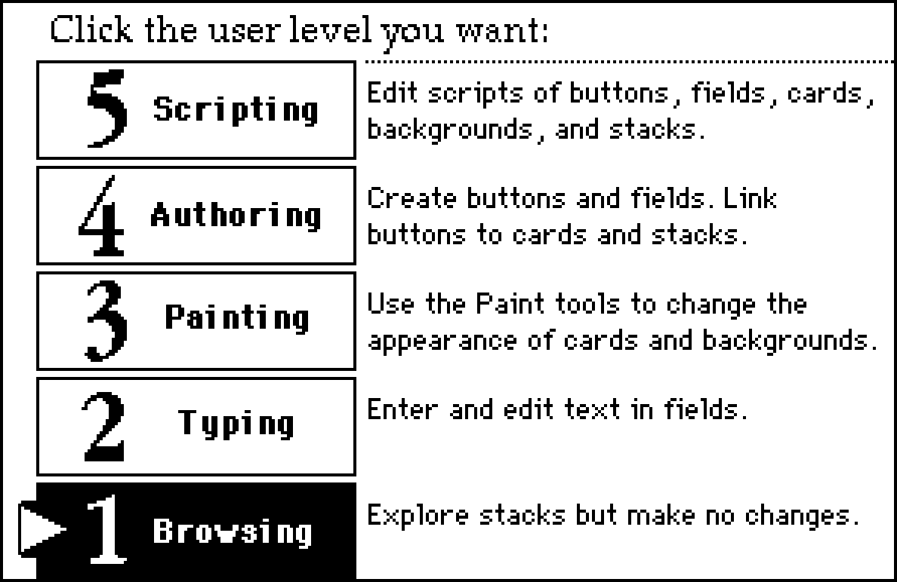

Programming systems
deserve a theory too!
Tomas Petricek, Charles University, Prague
Work by/with Joel Jakubovic & Jonathan Edwards


Programming Languages
Programming is
writing code
Formal semantics, implementation, paradigms, types
We know how
to study this!

Programming Systems
Interacting with a stateful system
Feedback, liveness, interactive user interfaces
But how do we
study this?
Different paradigms
Different ways of thinking & working
-
Different research methodologies
Soundness vs. programming experience -
Different paradigmatic achievements
Smalltalk vs. Algol and operational semantics -
Different research questions
Verification vs. making programs open
Technical dimensions
Taking the first step
- Standing on the shoulders of giants?
- Qualitative research methodology for evaluating programming systems
Dimensions of systems
- Charting the territories
- Design choices for interesting problems
- Analysis of the past & design of the new
Demo
Technical dimensions matrix
Examples of dimensions
Modes of interaction
- Writing code vs. debugging code
- User levels in HyperCard
Explicit structure
- Structured representation vs. text
- Bytes vs. soup of objects vs. cons cells
Self-sustainability
- Can system be modified from within itself?
Demo
Commodore 64 BASIC recreation
Opening the software blackbox
-
Freedom to modify software...
Open-source, but can you change it? -
Browsers in object-oriented systems?
Not in Java! Abstraction & encapsulation! -
View source on the 1990s web
Not with WASM and<canvas> -
Opening the software blackbox?
Explicit structure + self-sustainability
Two ideas

Explicit structure
- Document with code and data
- Smalltalk image easier to navigate
- Also contain evaluation trace!
Edit history
- Can be replayed to get the document
- Makes merging documents easier
- Record and/or analyse past edits?
Demo: Conference planning

Demo
Document-based programming
Programming systems
deserve a theory too!
- Technical dimensions of programming systems
- Ascending the Ladder to Self-Sustainability
- The Lost Ways of Programming: Commodore 64 BASIC
- Live & Local Schema Change: Challenge Problems
Tomas Petricek, Charles University, Prague